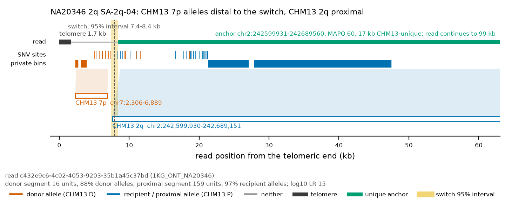
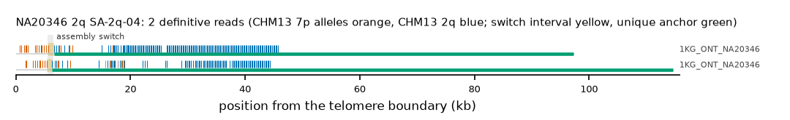

NA20346 2q: SA-2q-04
Claim NA20346|2q|SA-2q-04. All claims
- cohort
- 1000 Genomes ONT
- individual
- NA20346
- haplotype
- hap2
- arm
- 2q
- allele
- SA-2q-04 (foreign)
- model
- donor CHM13 7p, proximal CHM13 2q, recipient CHM13 2q, pattern DP
- claimed end(s)
NA20346#2#JBIRDS010000056.1#R- assembly switch
- 12,773 bp from the telomere boundary; on CHM13 chr2:242681777; own-window projection 5589-6582 bp
- v1 verdict
- confirmed (confirmed)
- definitive tier
- definitive
- reads
- 3 conclusive switch-concordant, 0 discordant, 5 contradicting, 2 consistent; 2 definitive (1KG_ONT_NA20346)
- by tier
- definitive:2;conclusive_shared_anchor:1;consistent:2;contradicts:5
- source
- https://ftp.1000genomes.ebi.ac.uk/vol1/ftp/data_collections/1KG_ONT_VIENNA/t2t/NA20346.t2t.cram
- note
- confirmed:robust; keep


Conclusive and contradicting reads (8)
2 further reads are consistent (switch test passed, but no terminal telomere, anchor or integrity); they are
listed in reads.tsv.gz. Switch: 95% interval in subtelomere coordinates (kb from the
telomere boundary) and projected on CHM13 2q. Each samtools command prints the read's record
from its public file (CRAM: add the CHM13 v2.0 FASTA as -T).
| read | dataset | tier | length | switch (subtelomere, kb) | switch on CHM13 | donor units / purity | proximal units / purity | anchor (CHM13, MAPQ, unique) | own-assembly best end | fetch |
|---|---|---|---|---|---|---|---|---|---|---|
2795f061-e8e9-4bf6-bea5-9766dfe09ad4 | 1KG_ONT_NA20346 | definitive | 115,731 | 5.4-6.3 | chr2:242689560-242690540 | 12 / 0.83 | 100 / 0.93 | chr2:242581148-242689560, 60, 35.9 kb | NA20346#2#JBIRDS010000056.1#R (86.9%) ✓ | samtoolssamtools view -F 0x900 -T chm13v2.0.fa.gz -X 'https://ftp.1000genomes.ebi.ac.uk/vol1/ftp/data_collections/1KG_ONT_VIENNA/t2t/NA20346.t2t.cram' 'https://ftp.1000genomes.ebi.ac.uk/vol1/ftp/data_collections/1KG_ONT_VIENNA/t2t/NA20346.t2t.cram.crai' 'chr2:242691753-242696752' | awk -v r='2795f061-e8e9-4bf6-bea5-9766dfe09ad4' '$1==r' |
c432e9c6-4c02-4053-9203-35b1a45c37bd | 1KG_ONT_NA20346 | definitive | 99,021 | 5.7-6.7 | chr2:242689560-242690543 | 16 / 0.88 | 159 / 0.97 | chr2:242599931-242689560, 60, 17.1 kb | NA20346#2#JBIRDS010000056.1#R (96.3%) ✓ | samtoolssamtools view -F 0x900 -T chm13v2.0.fa.gz -X 'https://ftp.1000genomes.ebi.ac.uk/vol1/ftp/data_collections/1KG_ONT_VIENNA/t2t/NA20346.t2t.cram' 'https://ftp.1000genomes.ebi.ac.uk/vol1/ftp/data_collections/1KG_ONT_VIENNA/t2t/NA20346.t2t.cram.crai' 'chr2:242691753-242696752' | awk -v r='c432e9c6-4c02-4053-9203-35b1a45c37bd' '$1==r' |
2b299fd5-5e76-4992-8a99-30bce884a18b | 1KG_ONT_NA20346 | conclusive, shared anchor | 60,154 | 5.5-6.5 | chr2:242689560-242690553 | 11 / 0.82 | 159 / 0.97 | chr2:242639218-242689560, 60, 0.0 kb | NA20346#2#JBIRDS010000056.1#R (97.9%) ✓ | samtoolssamtools view -F 0x900 -T chm13v2.0.fa.gz -X 'https://ftp.1000genomes.ebi.ac.uk/vol1/ftp/data_collections/1KG_ONT_VIENNA/t2t/NA20346.t2t.cram' 'https://ftp.1000genomes.ebi.ac.uk/vol1/ftp/data_collections/1KG_ONT_VIENNA/t2t/NA20346.t2t.cram.crai' 'chr2:242691753-242696752' | awk -v r='2b299fd5-5e76-4992-8a99-30bce884a18b' '$1==r' |
ce35c499-50c9-4fe7-a401-4f7c0bbef7ec | 1KG_ONT_NA20346 | contradicts | 102,141 | 1.3-1.3 | chr2:242692629-242692645 | 2 / 0.50 | 168 / 1.00 | chr2:242595173-242681145, 60, 21.9 kb | samtoolssamtools view -F 0x900 -T chm13v2.0.fa.gz -X 'https://ftp.1000genomes.ebi.ac.uk/vol1/ftp/data_collections/1KG_ONT_VIENNA/t2t/NA20346.t2t.cram' 'https://ftp.1000genomes.ebi.ac.uk/vol1/ftp/data_collections/1KG_ONT_VIENNA/t2t/NA20346.t2t.cram.crai' 'chr2:242691753-242696752' | awk -v r='ce35c499-50c9-4fe7-a401-4f7c0bbef7ec' '$1==r' | |
96aaa8ee-1575-42c8-9ccf-1928c32414f8 | 1KG_ONT_NA20346 | contradicts | 59,539 | 1.3-1.3 | chr2:242692629-242692650 | 2 / 0.50 | 167 / 1.00 | chr2:242643621-242681078, 60, 0.0 kb | samtoolssamtools view -F 0x900 -T chm13v2.0.fa.gz -X 'https://ftp.1000genomes.ebi.ac.uk/vol1/ftp/data_collections/1KG_ONT_VIENNA/t2t/NA20346.t2t.cram' 'https://ftp.1000genomes.ebi.ac.uk/vol1/ftp/data_collections/1KG_ONT_VIENNA/t2t/NA20346.t2t.cram.crai' 'chr2:242691753-242696752' | awk -v r='96aaa8ee-1575-42c8-9ccf-1928c32414f8' '$1==r' | |
6b639f3f-da25-440f-82e9-5578ccfbf345 | 1KG_ONT_NA20346 | contradicts | 37,953 | 1.2-1.3 | chr2:242692629-242692650 | 2 / 0.50 | 131 / 1.00 | chr2:242659259-242681098, 60, 0.0 kb | samtoolssamtools view -F 0x900 -T chm13v2.0.fa.gz -X 'https://ftp.1000genomes.ebi.ac.uk/vol1/ftp/data_collections/1KG_ONT_VIENNA/t2t/NA20346.t2t.cram' 'https://ftp.1000genomes.ebi.ac.uk/vol1/ftp/data_collections/1KG_ONT_VIENNA/t2t/NA20346.t2t.cram.crai' 'chr2:242691753-242696752' | awk -v r='6b639f3f-da25-440f-82e9-5578ccfbf345' '$1==r' | |
5b556d41-44cd-48d8-ab4e-456282f2d63c | 1KG_ONT_NA20346 | contradicts | 36,069 | 1.3-1.3 | chr2:242692629-242692648 | 2 / 0.50 | 92 / 0.97 | chr2:242665790-242681032, 60, 0.0 kb | samtoolssamtools view -F 0x900 -T chm13v2.0.fa.gz -X 'https://ftp.1000genomes.ebi.ac.uk/vol1/ftp/data_collections/1KG_ONT_VIENNA/t2t/NA20346.t2t.cram' 'https://ftp.1000genomes.ebi.ac.uk/vol1/ftp/data_collections/1KG_ONT_VIENNA/t2t/NA20346.t2t.cram.crai' 'chr2:242691753-242696752' | awk -v r='5b556d41-44cd-48d8-ab4e-456282f2d63c' '$1==r' | |
f41eebcd-9e69-4928-827d-5e2fdb675ba1 | 1KG_ONT_NA20346 | contradicts | 33,819 | 1.3-1.3 | chr2:242692629-242692650 | 2 / 0.50 | 82 / 0.98 | chr2:242668851-242681090, 60, 0.0 kb | samtoolssamtools view -F 0x900 -T chm13v2.0.fa.gz -X 'https://ftp.1000genomes.ebi.ac.uk/vol1/ftp/data_collections/1KG_ONT_VIENNA/t2t/NA20346.t2t.cram' 'https://ftp.1000genomes.ebi.ac.uk/vol1/ftp/data_collections/1KG_ONT_VIENNA/t2t/NA20346.t2t.cram.crai' 'chr2:242691753-242696752' | awk -v r='f41eebcd-9e69-4928-827d-5e2fdb675ba1' '$1==r' |
Files and IGV
This is a showcase claim: its reads are in the repository under evidence/showcase/NA20346__2q__SA-2q-04/ with IGV sessions CHM13 v2.0 (loci chr7:1-20696 and chr2:242581293-242696752) and own assembly, and a what-you-should-see note. Split at the switch, the distal segments of 0 of 2 showcase reads align to CHM13 7p and the proximal segments of 2 to CHM13 2q at MAPQ 60.
Re-derive this verdict
git clone https://github.com/jlanej/human-subtelomere-atlas && cd human-subtelomere-atlas
evidence/replicate_claim.sh 'NA20346|2q|SA-2q-04'The script fetches the cited reads from the public source by region and read ID, re-runs the frozen criteria and compares every per-read and claim verdict with this page (details).